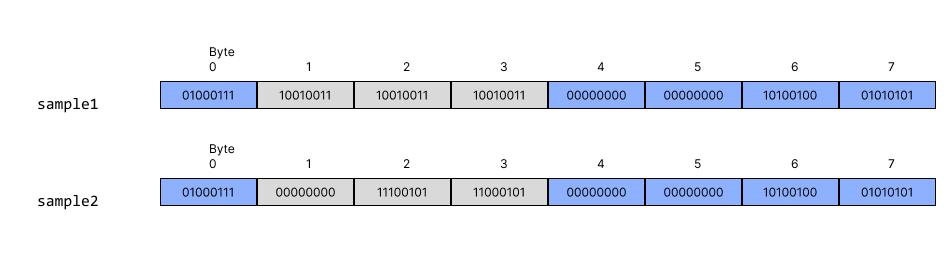

Week 3
This week covers structures and typedefs.
Structures
A structure is a collection of related variables grouped under one name. In the C standard, structures are referred to as aggregates.
The struct keyword is used to define a structure type:
// A structure for representing a playing card.
struct card {
const char *face;
const char *suit;
}; // Note: a semicolon is required after the closing brace.
The example above defines a new structure type named card.
The variables declared inside the braces (face and suit) are called members.
Since this type definition is a declaration, a semicolon must follow the closing brace.
Member Types
Structures can contain members of different types. However, a structure cannot contain a member that is an instance of its own type. For example, the following is invalid:
// Invalid: a structure cannot contain an instance of itself.
struct card {
const char *face;
const char *suit;
struct card nextCard; // Invalid
};
To work around this, use a pointer to the same type:
// Valid: a structure can contain a pointer to its own type.
struct card {
const char *face;
const char *suit;
struct card *nextCard; // Valid
};
This pattern is commonly used for creating nodes in a linked list.
Defining Variables of Structure Types
Structure definitions alone only create a new type that can be used later in code; they do not reserve any space in memory. A structure definition is essentially a blueprint. To begin reserving memory for variables, use the following syntax:
// create a new card struct
struct card myCard;
// or create an array of card structs
struct card deck[52];
// or create a pointer to a card struct
struct card *cardPtr;
You can also create variables of a struct during the definition of the struct by providing a comma-separated list of variable names after the closing brace of the struct but before the ending semicolon of the declaration:
struct card {
const char *face;
const char *suit;
} myCard, deck[52], *cardPtr;
Structures without Tag Names
You can define a struct without a tag name:
struct { // NOTE: no "card" tag name
const char *face;
const char *suit;
} exampleCard;
However, without a tag name, you cannot declare additional variables of this type later in the program. Therefore, you must provide variable names during the declaration to use them.
// This defines and declares two variables immediately.
struct {
int x;
int y;
} point1, point2;
Comparing Structure Objects
Structures cannot be compared using the operators == or != because
structure members may not be stored in consecutive bytes of memory. Compilers
often insert padding bytes to align data members according
to their type’s alignment requirements.
These holes contain unspecified values, which may differ between structures even if all members are identical. In rare cases, they might coincidentally contain the same garbage data (for example, if memory was recently zeroed or reused), making a bytewise comparison appear to return true. However, this behavior is entirely undefined and cannot be relied upon.
In short, even if two structures look the same in memory, the C standard provides no guarantee that comparing them byte-by-byte would produce consistent results.
Illustration of padding and comparison
Suppose we have a struct defined as follows, with two variables of that type
named sample1 and sample2.
struct example {
char c;
int i;
} sample1, sample2;
Initially, the variables contain garbage values:

We then assign values to the members of sample1:
sample1.c = 'G';
sample1.i = 42069;

Notice that the int portion begins at byte 4. This is because
integers must align on a 4-byte boundary, leaving a gap in bytes 1–3.
Next, we assign the same values to the members of sample2:
sample2.c = 'G';
sample2.i = 42069;

When comparing the two, the visible members appear equivalent, but the hidden padding bytes may contain different, undefined values. Even if both happen to contain zeros or identical garbage, it would be by coincidence, not by rule. The result of comparing such structs directly would therefore be undefined.

Warning
Padding bytes are not initialized or standardized by the C language. Comparing structs as raw memory is undefined behavior and should never be used as a substitute for member-by-member comparison.
Using sizeof with Structures
The sizeof operator can be used to determine the amount of memory a structure occupies. However, the value returned by sizeof a structure often exceeds the sum of its members' sizes due to padding and alignment.
For example:
struct example {
char c;
int i;
};
printf("%zu\n", sizeof(struct example)); // Likely prints 8, not 5
The sizeof value includes both the member data and any extra bytes the compiler adds to satisfy memory alignment requirements.
Structure packing and alignment
When structures are stored in memory, the compiler may insert padding bytes between members to align data according to hardware requirements. This improves access performance but can waste space.
You can minimize wasted space by ordering structure members from largest to
smallest type (for example, double then int then char).
Some compilers provide directives like #pragma pack to override default
alignment and reduce padding. However, this is compiler-specific and
may lead to portability or performance issues.
It is generally recommended to avoid using #pragma pack unless you
have a clear and justified need, such as matching external binary data formats.
typedef
typedef allows you to create synonyms (or aliases) for previously defined
types.
It is commonly used to create shorter names for struct types and simplify declarations of types like function pointers.
Tip
You can use typedef to avoid retyping out struct card each time you create a new variable of type card.
typedef struct card Card;
// you can now declare a new card struct as follows
Card newCard;
Combining typedef with struct Definitions
You can combine typedef with a struct declaration to make your code cleaner
and more readable.
Tip
// Basic struct definition
struct card {
const char *face;
const char *suit;
};
// typedef struct definition
typedef struct {
const char *face;
const char *suit;
} Card;
// Create an instance of each
struct card basicCard;
Card typeDefCard;
Using typedef in this way eliminates the need to repeatedly write struct
when declaring variables and clearly separates the definition of the structure
from its use as a type.
Warning
When using typedef in this manner, do not include variables in the
struct definition itself. Doing so would cause those variables to be
recreated every time the alias is used.
If you need to define variables along with the structure, use the standard
struct definition and then follow it with a separate typedef alias, as
shown in the previous section.
Creating Readable and Consistent Type Aliases
typedef is also used to create clear, platform-independent type names.
This is common in system-level programming and game development, where
developers want to ensure that integer sizes and data types are explicit and
consistent across compilers.
For example, we can define type aliases like this:
typedef uint8_t uint8;
typedef uint16_t uint16;
typedef uint32_t uint32;
typedef uint64_t uint64;
typedef int8_t int8;
typedef int16_t int16;
typedef int32_t int32;
typedef int64_t int64;
typedef int32 bool32;
typedef float real32;
typedef double real64;
These aliases improve clarity by clearly expressing the intended size and purpose of each type, regardless of the compiler or platform.
Info
This technique helps:
- Make code explicit about the bit-width of each type.
- Improve portability, since
stdint.hguarantees fixed-width integer types likeint32_tanduint16_t. - Enhance readability, particularly in codebases where naming
consistency (like
real32vsfloat) helps distinguish between conceptual or mathematical types.